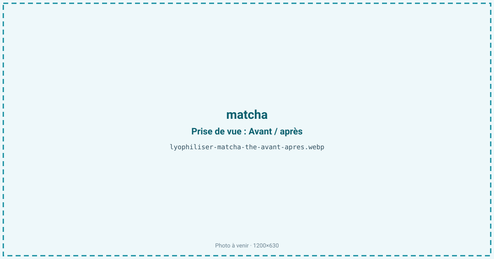
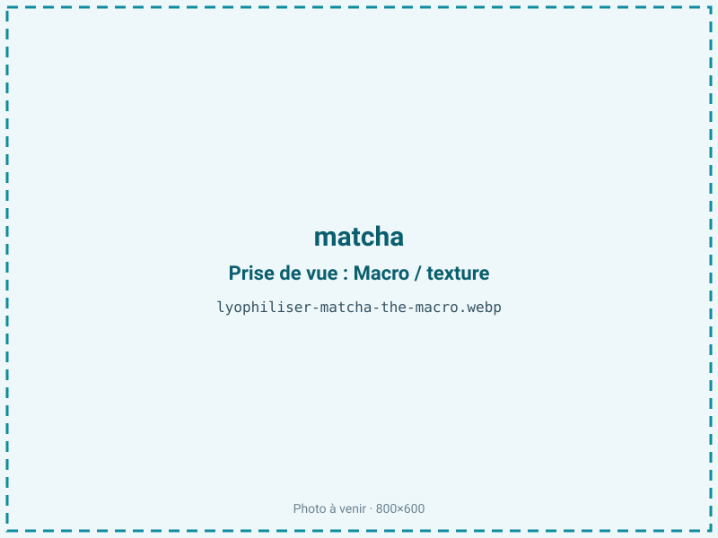
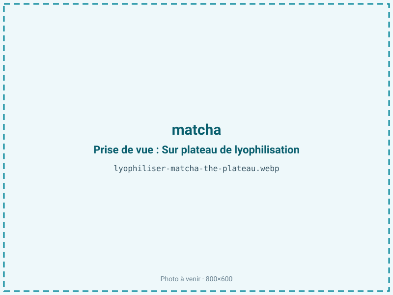
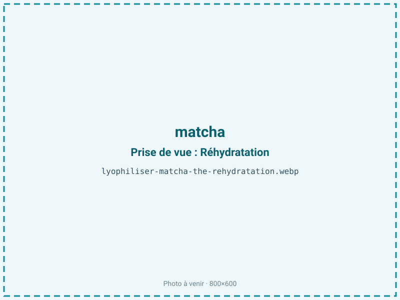

Lyophiliser du matcha
Une préparation de matcha ou une infusion de thé vert concentrée perd sa couleur et ses catéchines en quelques heures à l'air. La lyophilisation la fige en une poudre vert vif et stable, qui conserve la chlorophylle, l'EGCG et la L-théanine sans le virage olive provoqué par un séchage à chaud.

En bref
Comment matcha se comporte à la lyophilisation
Le matcha traité ici est une préparation aqueuse à environ 76 % d'eau, mêlant fines particules de feuille broyée (tencha) et extrait soluble. La couleur tient à la chlorophylle a et b, dont l'atome de magnésium central est expulsé dès qu'on chauffe ou qu'on acidifie : la molécule vire alors en phéophytine, d'un olive brunâtre irréversible. Les catéchines, EGCG en tête, sont thermosensibles et s'oxydent facilement, tandis que la L-théanine et la caféine traversent bien le procédé.
À la congélation, l'eau cristallise dans la phase liquide ; à la sublimation, le front progresse dans un gâteau poreux mais les particules de matcha, très fines, se tassent et freinent l'échappement de vapeur : une couche mince est indispensable. La fraction lipidique de la feuille (environ 5 %) et la chlorophylle rendent le produit sensible à l'oxydation une fois l'eau retirée. Tout apport de chaleur, même modéré, dégrade simultanément la teinte et les antioxydants.
Paramètres de cycle
Congeler rapidement à −30 voire −40 °C pour limiter la taille des cristaux et préserver la finesse de la poudre. Étaler en couche mince de 5 à 8 mm, sans quoi le tassement des particules laisse un cœur humide. En sublimation, maintenir une clayette basse et ne pas dépasser environ 30 °C : au-delà, la chlorophylle bascule en phéophytine et l'EGCG se dégrade. Enchaîner sur un palier secondaire pour stabiliser l'humidité résiduelle.
Le critère d'arrêt vise une aw de 0,20 à 0,30. Le matcha renfermant une fraction lipidique de l'ordre de 5 %, on se cale plutôt vers le haut de cette plage, proche de 0,30, pour conserver la monocouche d'eau qui protège lipides et pigments : sur-sécher n'apporte rien et fragilise la couleur. Un contrôle d'aw sécurise le lot.
Pièges connus
- Couleur sensible à la lumière et à l'oxygène.
- Broyage fin à préciser.



Variantes & provenance
Le grade change tout : un matcha cérémonial de première récolte (ichibancha), issu de feuilles ombrées plusieurs semaines, est plus vert, plus riche en L-théanine et moins amer qu'un grade culinaire de récolte tardive, plus chargé en catéchines et déjà partiellement oxydé. La provenance (Uji, Nishio) et la durée d'ombrage modulent l'intensité du vert. La finesse de broyage de départ influe sur le tassement en couche et donc sur la durée de séchage. Un matcha latte ou une base sucrée-lactée se lyophilise aussi, mais les sucres et protéines ajoutés abaissent la température de collapse et imposent une rampe plus prudente.
Conservation & DLUO
Le matcha cumule deux facteurs limitants : l'oxydation de la chlorophylle, qui vire à l'olive, et celle des catéchines, à quoi s'ajoute une fraction lipidique de 2 à 10 %. Pour cette part grasse, l'optimum de stabilité oxydative se situe entre aw 0,30 et 0,50 ; en dessous de 0,30, on retire la monocouche d'eau qui protège les lipides et le rancissement s'accélère, d'où l'intérêt de rester en haut de la plage cible. La couleur est par ailleurs très photosensible : une barrière opaque est indispensable, plus déterminante encore que pour la plupart des poudres. Comptez 12 à 24 mois en barrière opaque, idéalement sous azote et à l'abri de la lumière. Un stockage au frais ralentit nettement la perte de vert, la vitesse d'oxydation doublant environ tous les 10 °C.
12 à 24 mois en barrière opaque.
Estimez selon votre emballage :
Face aux autres procédés de séchage
Au séchage à l'air, le matcha s'oxyde et sa teinte glisse vers le jaune-olive tandis que l'EGCG chute. Au séchage à chaud, la formation de phéophytine est immédiate et le goût tourne à l'amer végétal cuit. Le micro-ondes sous vide limite l'exposition à l'air mais le front chaud dégrade encore la chlorophylle. La lyophilisation est le seul procédé qui maintient à la fois le vert vif et le profil antioxydant, ce qui justifie son emploi pour un ingrédient dont la valeur tient précisément à sa couleur.
Marchés & applications
Poudre pour boissons instantanées et matcha latte premium, pâtisserie et glacerie (macarons, entremets, crèmes), compléments antioxydants valorisant l'EGCG, mélanges secs pour distributeurs. Les clients types sont les marques de boissons fonctionnelles, les pâtissiers et chocolatiers, et les fabricants de compléments qui recherchent une poudre à couleur stable et titrée en catéchines.
- Poudre premium
- Boissons et pâtisserie
Questions fréquentes — matcha
Le matcha n'est-il pas déjà une poudre ?
Le matcha traditionnel est une feuille broyée à la meule de pierre. On lyophilise ici des préparations humides — concentrés, bases de latte, extraits — pour en faire une poudre instantanée stable.
La couleur reste-t-elle bien verte ?
Oui, à condition d'éviter toute chaleur : c'est l'absence de virage en phéophytine qui préserve le vert vif. La lumière reste ensuite l'ennemi principal, d'où la barrière opaque.
Les catéchines et l'EGCG sont-ils préservés ?
En grande partie : le froid préserve ces antioxydants thermosensibles bien mieux qu'un séchage à chaud, qui en détruit une fraction notable.
Pourquoi une barrière opaque est-elle si importante ?
La chlorophylle du matcha est très photosensible : à la lumière, la poudre ternit vite. L'opacité protège la couleur autant que l'azote protège de l'oxydation.
Peut-on lyophiliser un matcha latte prêt à boire ?
Oui, mais les sucres et le lait ajoutés abaissent la température de collapse : il faut une rampe plus douce pour éviter que la poudre ne se tasse.
Quel est le ratio ?
Environ 5:1 pour une préparation à 76 % d'eau : il faut à peu près 500 g de préparation pour 100 g de poudre.
Quelle différence avec un matcha atomisé ?
L'atomisation à chaud dégrade la couleur et une partie des catéchines ; la lyophilisation conserve un vert et un profil antioxydant supérieurs, à un coût plus élevé.
Prochaine étape : envoyez-nous 200 g
Vous avez les repères du matcha. La suite logique : nous envoyer un échantillon et repartir avec une fiche technique sur votre produit — rendement, aw finale, coût au kilo.
Tester du matcha — 250 à 500 €Déductible de votre premier lot.